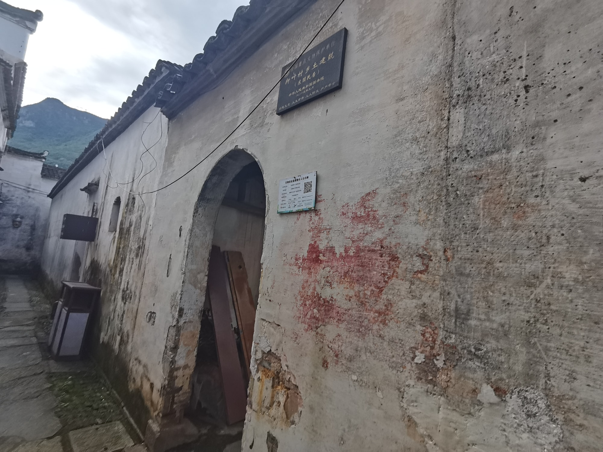
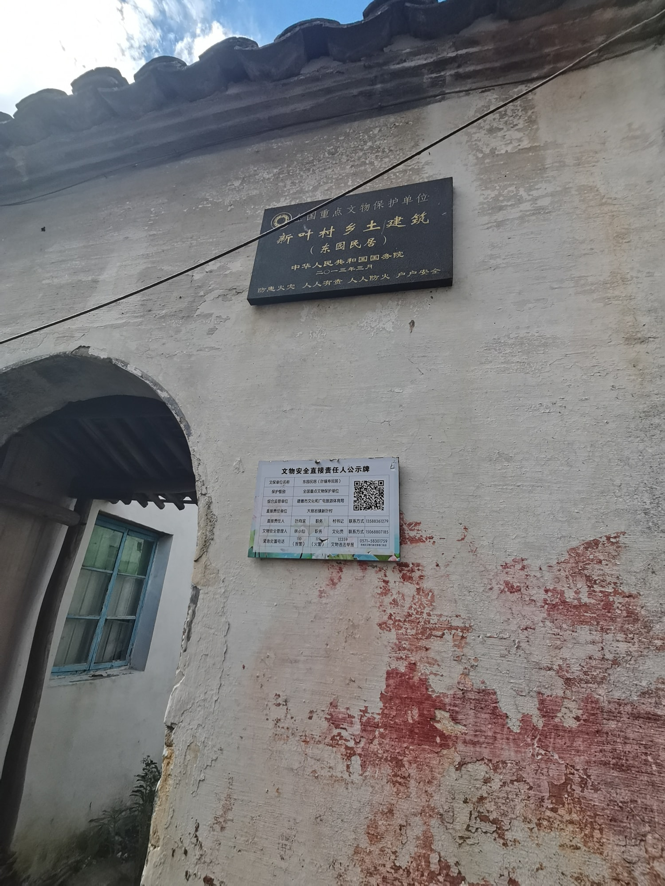
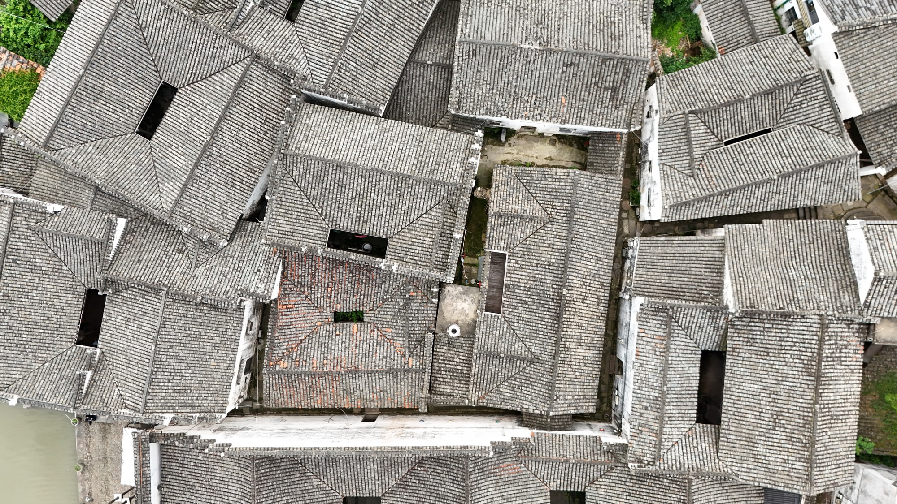

国保传统民居
从屋顶走到门前叶锡寿民居
叶锡寿民居是全国重点文物保护单位“新叶村乡土建筑”的组成部分。从连片屋面到街面入口，建筑在不同距离中逐渐显现。
01
回到街面的正面

从连片屋面回到街面，建筑正面与村中道路形成清晰关系。走近之后，一座具体住宅从聚落背景中显现出来。
02
侧旁入口的尺度

转到建筑侧旁，入口与邻近通行空间同时出现。正面和侧面彼此衔接，让住宅与街巷的连接方式更加清楚。

叶锡寿民居是全国重点文物保护单位“新叶村乡土建筑”的组成部分。从连片屋面到街面入口，建筑在不同距离中逐渐显现。

从连片屋面回到街面，建筑正面与村中道路形成清晰关系。走近之后，一座具体住宅从聚落背景中显现出来。

转到建筑侧旁，入口与邻近通行空间同时出现。正面和侧面彼此衔接，让住宅与街巷的连接方式更加清楚。